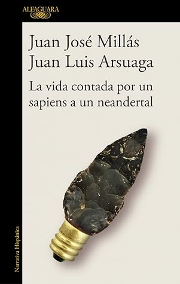

La vida contada por un sapiens a un neandertal
Reseña por Jorge I. Zuluaga

Ver reseña en GoodReads (necesita cuenta)
Como posiblemente leyeron en la descripción del libro (si no lo han hecho, se los cuento), "La vida contada por un sapiens a un neandertal" es el resumen de una larga "conversación" sobre la historia de los humanos (y mucho más) que Juan Luis Arsuaga, estrella internacional de la paleoantropología y autor de exitosos libros de divulgación paleontológica, sostiene con Juan José Millás, un original autor español cuyas obras han sido traducidas a muchas lenguas y que "traduce" aquí los detalles científicos de esa conversación a un lenguaje entendible por la mayoría de nosotros.
El título del libro es un poco engañoso, por lo menos si lo que esperan (como me pasó a mí) es una obra de divulgación en clave de ensayo. Cuando uno descubre, desde las primeras páginas, que el texto es literatura con una buena dosis de divulgación científica y que no hay en realidad ningún neandertal implicado, el atractivo del título se desvanece para dar paso al atractivo del texto en sí.
No se sabe quién es más original en esta "historia": si Juan José Millás, el literato, el poeta, el artista sensible que escoge acertadamente los apartes de la conversación para contar, el neandertal de la conversación, como él mismo se identifica; o Juan Luis Arsuaga, el Sapiens, el genio científico, la inspiración de la historia, el profesor que explica a su "alumno" detalles sobre la historia de su especie, Sapiens, y lo hace siempre con metáforas y analogías muy originales y al mismo tiempo bien aterrizadas en la realidad.
Ya había leído al menos uno de los libros de Arsuaga (Vida, la gran historia, aquí mi reseña) y tengo otros dos "en remojo"; como la mayoría de sus lectores, quedé fascinado con su estilo y evidente erudición (no solo científica; Arsuaga destila una amplia cultura). Pero descubrir la faceta revelada en esta conversación es ¡sencillamente genial! Una faceta menos "acartonada" por las restricciones de un ensayo científico (así sea divulgativo), una faceta más humana, más creativa. Con esta lectura, mi admiración por el científico se ha duplicado.
A Juan José Millás no lo conocía (ahora quiero leer sus obras, lo consiguieron). Pero su originalidad y desparpajo me encantaron. El estilo de su escritura, revelado en este "diario" (porque también a eso se me antoja parecido este librito), es tan espontáneo, tan fresco, que parece que estuvieras leyendo los pensamientos mismos del autor. Esto sin dejar de mencionar que la traducción que hace de las explicaciones de Arsuaga tiene una gran precisión, más propia de un profesional de las ciencias. Obviamente el texto ha sido editado por el científico, pero Juan José ha sabido ciertamente capturar los mejores detalles y contarlos de manera asombrosamente atractiva sin perder precisión. Un escritor con madera de divulgador. Espero que escriba otras cosas de ciencia, porque lo hace muy bien.
El libro está lleno de datos asombrosos y muy bien escogidos. Algunos de esos datos están en los otros libros de Arsuaga, y sí, tal vez más ampliamente explicados; pero en este texto aparecen espontáneamente en una conversación entre dos amigos, lo que permite crear un vínculo entre el dato y la situación que difícilmente podrás olvidar (los humanos somos mejores para recordar "chismes" que datos científicos). Déjenme citar solo un ejemplo, aunque arruine algunas sorpresas: para explicar la razón por la cual los Homo sapiens machos tenemos testículos pequeños y un pene grueso (el más grueso entre los homínidos), entre otras características de los rasgos sexuales primarios y secundarios de nuestra especie, Millás cuenta la historia de una *sui generis* conversación con Arsuaga que sostiene en un sex shop en Madrid. La situación se torna sencillamente cómica cuando a ella se une un modelo a escala de un pene y la joven que atiende el negocio. Será muy difícil para mí olvidar esta cómica anécdota, como lo será también olvidar los datos científicos que la acompañan (y que no repito aquí para dejar que ustedes lo descubran).
El libro es fácil de conseguir, barato, corto y muy ameno. No hay excusa para no leerlo.